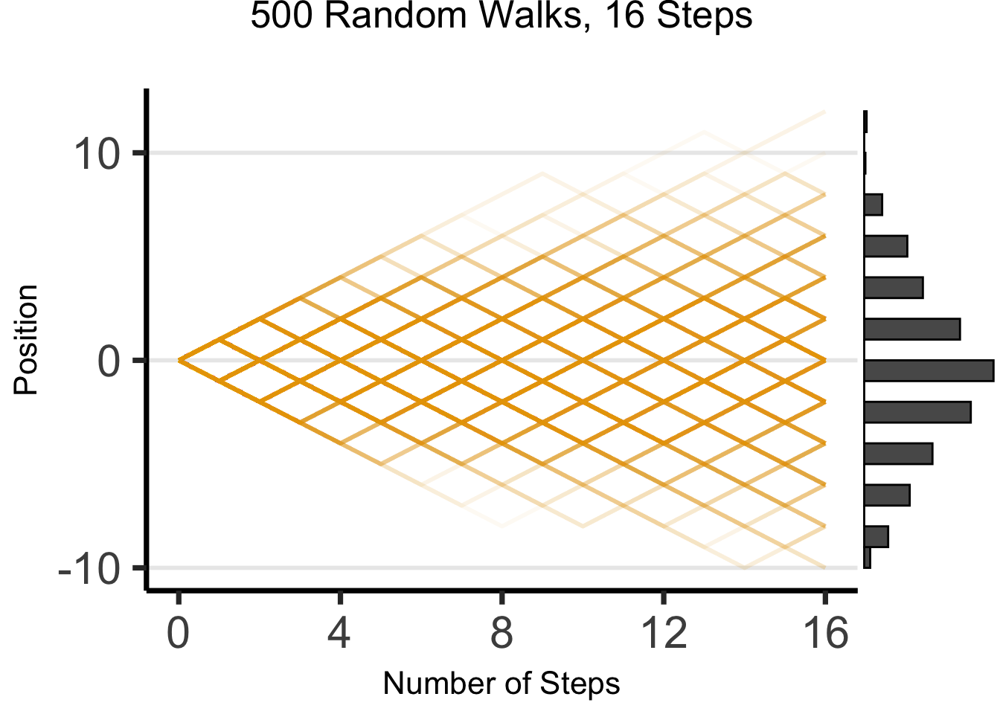
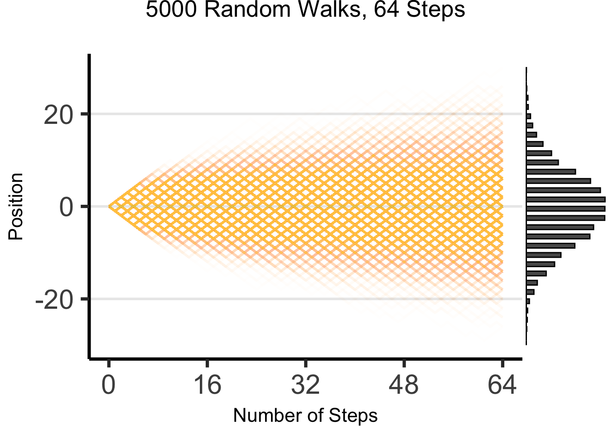
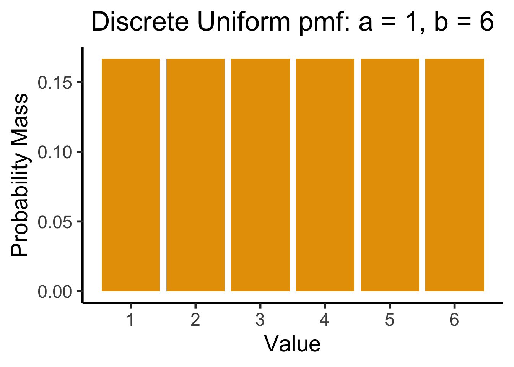
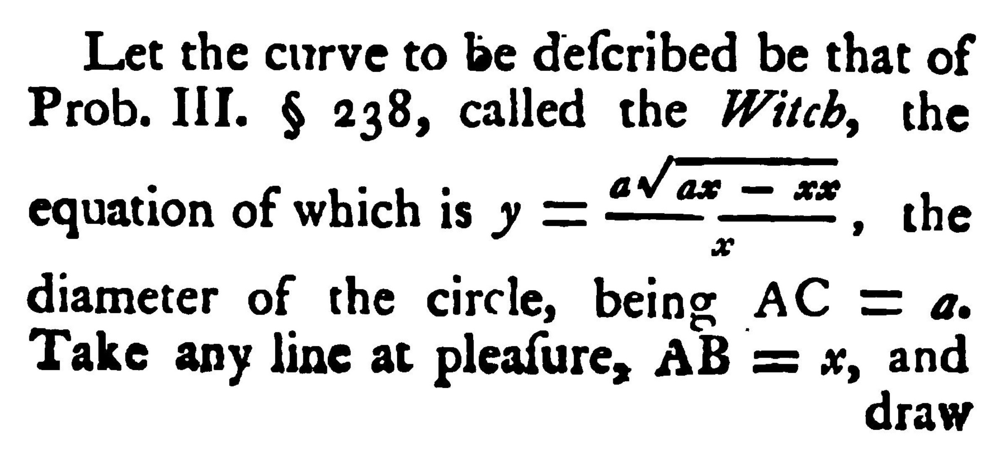

source("../dsan-globals/_globals.r")Week 5: Continuous Distributions
DSAN 5100: Probabilistic Modeling and Statistical Computing
Section 03
Class Sessions
Recap / Continuous Probability
- Continuous vs. Discrete
- What things have distributions?
- CDFs, pdfs, pmfs
\[ \DeclareMathOperator*{\argmax}{argmax} \DeclareMathOperator*{\argmin}{argmin} \newcommand{\bigexp}[1]{\exp\mkern-4mu\left[ #1 \right]} \newcommand{\bigexpect}[1]{\mathbb{E}\mkern-4mu \left[ #1 \right]} \newcommand{\definedas}{\overset{\text{defn}}{=}} \newcommand{\definedalign}{\overset{\phantom{\text{defn}}}{=}} \newcommand{\eqeventual}{\overset{\text{eventually}}{=}} \newcommand{\expect}[1]{\mathbb{E}[#1]} \newcommand{\expectsq}[1]{\mathbb{E}^2[#1]} \newcommand{\fw}[1]{\texttt{#1}} \newcommand{\given}{\mid} \newcommand{\green}[1]{\color{green}{#1}} \newcommand{\heads}{\outcome{heads}} \newcommand{\lik}{\mathcal{L}} \newcommand{\mle}{\textsf{ML}} \newcommand{\orange}[1]{\color{orange}{#1}} \newcommand{\outcome}[1]{\textsf{#1}} \newcommand{\param}[1]{{\color{purple} #1}} \newcommand{\pgsamplespace}{\{\green{1},\green{2},\green{3},\purp{4},\purp{5},\purp{6}\}} \newcommand{\prob}[1]{P\left( #1 \right)} \newcommand{\purp}[1]{\color{purple}{#1}} \newcommand{\spacecap}{\; \cap \;} \newcommand{\spacewedge}{\; \wedge \;} \newcommand{\tails}{\outcome{tails}} \newcommand{\Var}[1]{\text{Var}[#1]} \newcommand{\bigVar}[1]{\text{Var}\mkern-4mu \left[ #1 \right]} \]
From Last Week
library(tibble)
library(ggplot2)
disc_df <- tribble(
~x, ~y, ~label,
0, 0, "A",
0, 1, "B",
1, 0, "C",
1, 1, "D"
)
ggplot(disc_df, aes(x=x, y=y, label=label)) +
geom_point(size=g_pointsize) +
geom_text(
size=g_textsize,
hjust=1.5,
vjust=-0.5
) +
xlim(-0.5,1.5) + ylim(-0.5,1.5) +
coord_fixed() +
dsan_theme("quarter") +
labs(
title="Discrete Probability Space in N"
)
\[ \Pr(A) = \underbrace{\frac{|\{A\}|}{|\Omega|}}_{\mathclap{\small \text{Probability }\textbf{mass}}} = \frac{1}{|\{A,B,C,D\}|} = \frac{1}{4} \]
library(ggforce)
ggplot(disc_df, aes(x=x, y=y, label=label)) +
xlim(-0.5,1.5) + ylim(-0.5,1.5) +
geom_rect(aes(xmin = -0.5, xmax = 1.5, ymin = -0.5, ymax = 1.5), fill=cbPalette[1], color="black", alpha=0.3) +
geom_circle(aes(x0=x, y0=y, r=0.25), fill=cbPalette[2]) +
coord_fixed() +
dsan_theme("quarter") +
geom_text(
size=g_textsize,
#hjust=1.75,
#vjust=-0.75
) +
geom_text(
data=data.frame(label="Ω"),
aes(x=-0.4,y=1.39),
parse=TRUE,
size=g_textsize
) +
labs(
title=expression("Continuous Probability Space in "*R^2)
)\[ \Pr(A) = \underbrace{\frac{\text{Area}(\{A\})}{\text{Area}(\Omega)}}_{\mathclap{\small \text{Probability }\textbf{density}}} = \frac{\pi r^2}{s^2} = \frac{\pi \left(\frac{1}{4}\right)^2}{4} = \frac{\pi}{64} \]
What Things Have Distributions?
- Answer: Random Variables
CDFs/pdfs/pmfs: What Are They?
- Functions which answer questions about a Random Variable (\(X\) in this case) with respect to a non-random value (\(v\) in this case, for “value”)
- CDF: What is probability that \(X\) takes on a value less than or equal to \(v\)?
\[ F_X(v) \definedas \Pr(X \leq v) \]
- pmf: What is the probability of this exact value? (Discrete only)
\[ p_X(v) \definedas \Pr(X = v) \]
- pdf: üôà ‚Ä¶It‚Äôs the thing you integrate to get the CDF
\[ f_X(v) \definedas \frac{d}{dv}F_X(v) \iff \int_{-\infty}^{v} f_X(v)dv = F_X(v) \]
Continuous Probability
CDFs/pdfs/pmfs: Why Do We Use Them?
- CDF is like the “API” that allows you to access all of the information about the distribution (pdf/pmf is derived from the CDF)
- Example: we know there’s some “thing” called the Exponential Distribution…
- How do we use this distribution to understand a random variable \(X \sim \text{Exp}\)?
- Answer: the CDF of \(X\)!
- Since all exponentially-distributed RVs have the same PDF, we can call this PDF “the” exponential distribution
- Say we want to find the median of \(X\): The median is the number(s) \(m\) satisfying
\[ \Pr(X \leq m) = \frac{1}{2} \]
Finding a Median via the CDF
Median of a Random Variable \(X\)
The median of a random variable \(X\) with some CDF \(F_X(v_X)\) is the [set of] numbers \(m\) for which the probability that \(X\) is lower than \(m\) is \(\frac{1}{2}\):
\[ \begin{align*} \text{Median}(X) &= \left\{m \left| F_X(m) = \frac{1}{2} \right. \right\} \\ &= \left\{m \left| \int_{-\infty}^{m}f_X(v_X)dv_X = \frac{1}{2} \right. \right\} \end{align*} \]
(In case you’re wondering why we start with the median rather than the more commonly-used mean: it’s specifically because I want you to get used to calculating general functions \(f(X)\) of a random variable \(X\). It’s easy to just e.g. learn how to compute the mean \(\expect{X}\) and forget that this is only one of many possible choices for \(f(X)\).)
Median via CDF Example
Example: If \(X \sim \text{Exp}(\param{\lambda})\),
\[ F_X(v) = 1 - e^{-\lambda v} \]
So we want to solve for \(m\) in
\[ F_X(m) = \frac{1}{2} \iff 1 - e^{-\lambda m} = \frac{1}{2} \]
Step-by-Step
\[ \begin{align*} 1 - e^{-\lambda m} &= \frac{1}{2} \\ \iff e^{-\lambda m} &= \frac{1}{2} \\ \iff \ln\left[e^{-\lambda m}\right] &= \ln\left[\frac{1}{2}\right] \\ \iff -\lambda m &= -\ln(2) \\ \iff m &= \frac{\ln(2)}{\lambda} %3x = 19-2y \; \llap{\mathrel{\boxed{\phantom{m = \frac{\ln(2)}{\lambda}}}}}. \end{align*} \]
What is a pdf?
- Answer: Has no meaning outside of its context: a random variable with a CDF giving the distribution of its possible values
Top Secret Fun Fact
Same intuition as why every natural number is a real number, but converse is not true
Marble example: Let \(X\) be an RV defined on this space, so that \(X(A) = 1\), \(X(B) = 2\), \(X(C) = 3\), \(X(D) = 4\). Then the pmf for \(X\) is \(p_X(i) = \frac{1}{4}\) for \(i \in \{1, 2, 3, 4\}\).
We can then use the Dirac delta function \(\delta(v)\) to define a continuous pdf
\[ f_X(v) = \sum_{i \in \mathcal{R}_X}p_X(i)\delta(v - i) = \sum_{i=1}^4p_X(i)\delta(v-i) = \frac{1}{4}\sum_{i=1}^4 \delta(v - i) \]
and use either the (discrete) pmf \(p_X(v)\) or (continuous) pdf \(f_X(v)\) to describe \(X\):
\[ \begin{align*} \overbrace{\Pr(X \leq 3)}^{\text{CDF}} &= \sum_{i=1}^3\overbrace{p_X(i)}^{\text{pmf}} = \frac{1}{4} + \frac{1}{4} + \frac{1}{4} = \frac{3}{4} \\ \underbrace{\Pr(X \leq 3)}_{\text{CDF}} &= \int_{-\infty}^{3} \underbrace{f_X(v)}_{\text{pdf}} = \frac{1}{4}\int_{-\infty}^{3} \sum_{i = 1}^{4}\overbrace{\delta(v-i)}^{\small 0\text{ unless }v = i}dv = \frac{3}{4} \end{align*} \]
Common Continuous Distributions
- Normal: The friend who shows up everywhere
- Uniform: The stable, reliable friend
- Exponential: Good days and bad days
- Cauchy: Toxic af, stay away ☠️
Normal Distribution
- Recall from last week: the Binomial pdf
Code
k <- seq(0, 10)
prob <- dbinom(k, 10, 0.5)
bar_data <- tibble(k, prob)
ggplot(bar_data, aes(x=k, y=prob)) +
geom_bar(stat="identity", fill=cbPalette[1]) +
labs(
title="Binomial Distribution, N = 10, p = 0.5",
y="Probability Mass"
) +
scale_x_continuous(breaks=seq(0,10)) +
dsan_theme("half")
The Emergence of Order
- Who can guess the state of this process after 10 steps, with 1 person?
- 10 people? 50? 100? (If they find themselves on the same spot, they stand on each other’s heads)
- 100 steps? 1000?

The Result: 16 Steps
Code
library(tibble)
library(ggplot2)
library(ggExtra)
library(dplyr)
library(tidyr)
# From McElreath!
gen_histo <- function(reps, num_steps) {
support <- c(-1,1)
pos <-replicate(reps, sum(sample(support,num_steps,replace=TRUE,prob=c(0.5,0.5))))
#print(mean(pos))
#print(var(pos))
pos_df <- tibble(x=pos)
clt_distr <- function(x) dnorm(x, 0, sqrt(num_steps))
plot <- ggplot(pos_df, aes(x=x)) +
geom_histogram(aes(y = after_stat(density)), fill=cbPalette[1], binwidth = 2) +
stat_function(fun = clt_distr) +
dsan_theme("quarter") +
theme(title=element_text(size=16)) +
labs(
title=paste0(reps," Random Walks, ",num_steps," Steps")
)
return(plot)
}
gen_walkplot <- function(num_people, num_steps, opacity=0.15) {
support <- c(-1, 1)
# Unique id for each person
pid <- seq(1, num_people)
pid_tib <- tibble(pid)
pos_df <- tibble()
end_df <- tibble()
all_steps <- t(replicate(num_people, sample(support, num_steps, replace = TRUE, prob = c(0.5, 0.5))))
csums <- t(apply(all_steps, 1, cumsum))
csums <- cbind(0, csums)
# Last col is the ending positions
ending_pos <- csums[, dim(csums)[2]]
end_tib <- tibble(pid = seq(1, num_people), endpos = ending_pos, x = num_steps)
# Now convert to tibble
ctib <- as_tibble(csums, name_repair = "none")
merged_tib <- bind_cols(pid_tib, ctib)
long_tib <- merged_tib %>% pivot_longer(!pid)
# Convert name -> step_num
long_tib <- long_tib %>% mutate(step_num = strtoi(gsub("V", "", name)) - 1)
# print(end_df)
grid_color <- rgb(0, 0, 0, 0.1)
# And plot!
walkplot <- ggplot(
long_tib,
aes(
x = step_num,
y = value,
group = pid,
# color=factor(label)
)
) +
geom_line(linewidth = g_linesize, alpha = opacity, color = cbPalette[1]) +
geom_point(data = end_tib, aes(x = x, y = endpos), alpha = 0) +
scale_x_continuous(breaks = seq(0, num_steps, num_steps / 4)) +
scale_y_continuous(breaks = seq(-20, 20, 10)) +
dsan_theme("quarter") +
theme(
legend.position = "none",
title = element_text(size = 16)
) +
theme(
panel.grid.major.y = element_line(color = grid_color, linewidth = 1, linetype = 1)
) +
labs(
title = paste0(num_people, " Random Walks, ", num_steps, " Steps"),
x = "Number of Steps",
y = "Position"
)
}
wp1 <- gen_walkplot(500, 16, 0.05)
ggMarginal(wp1, margins = "y", type = "histogram", yparams = list(binwidth = 1))
The Result: 64 Steps
Code
library(ggExtra)
wp2 <- gen_walkplot(5000,64,0.008) +
ylim(-30,30)
ggMarginal(wp2, margins = "y", type = "histogram", yparams = list(binwidth = 1))
What’s Going On Here?

(Stay tuned for Markov processes \(\overset{t \rightarrow \infty}{\leadsto}\) Stationary distributions!)
Properties of the Normal Distribution
- If \(X \sim \mathcal{N}(\param{\mu}, \param{\theta})\), then \(X\) has pdf \(f_X(v)\) defined by
\[ f_X(v) = \frac{1}{\sigma\sqrt{2\pi}}\bigexp{-\frac{1}{2}\left(\frac{v - \mu}{\sigma}\right)^2} \]
- I hate memorizing as much as you do, I promise ü•¥
- The important part (imo): this is the most conservative out of all possible (symmetric) prior distributions defined on \(\mathbb{R}\) (defined from \(-\infty\) to \(\infty\))
“Most Conservative” How?
- Of all possible distributions with mean \(\mu\), variance \(\sigma^2\), \(\mathcal{N}(\mu, \sigma^2)\) is the entropy-maximizing distribution
- Roughly: using any other distribution (implicitly/secretly) imports additional information beyond the fact that mean is \(\mu\) and variance is \(\sigma^2\)
- Example: let \(X\) be an RV. If we know mean is \(\mu\), variance is \(\sigma^2\), but then we learn that \(X \neq 3\), or \(X\) is even, or the 15th digit of \(X\) is 7, can update to derive a “better” distribution (incorporating this info)
The Takeaway
- Given info we know, we can find a distribution that “encodes” only this info
- More straightforward example: if we only know that the value is something in the range \([a,b]\), entropy-maximizing distribution is the Uniform Distribution
| If We Know | And We Know | (Max-Entropy) Distribution Is… |
|---|---|---|
| \(\text{Mean}[X] = \mu\) | \(\text{Var}[X] = \sigma^2\) | \(X \sim \mathcal{N}(\mu, \sigma^2)\) |
| \(\text{Mean}[X] = \lambda\) | \(X \geq 0\) | \(X \sim \text{Exp}\left(\frac{1}{\lambda}\right)\) |
| \(X \geq a\) | \(X \leq b\) | \(X \sim \mathcal{U}[a,b]\) |
[Recall] Discrete Uniform Distribution
Code
library(tibble)
bar_data <- tribble(
~x, ~prob,
1, 1/6,
2, 1/6,
3, 1/6,
4, 1/6,
5, 1/6,
6, 1/6
)
ggplot(bar_data, aes(x=x, y=prob)) +
geom_bar(stat="identity", fill=cbPalette[1]) +
labs(
title="Discrete Uniform pmf: a = 1, b = 6",
y="Probability Mass",
x="Value"
) +
scale_x_continuous(breaks=seq(1,6)) +
dsan_theme("half")
Continuous Uniform Distribution
- If \(X \sim \mathcal{U}[a,b]\), then intuitively \(X\) is a value randomly selected from within \([a,b]\), with all values equally likely.
- Discrete case: what we’ve been using all along (e.g., dice): if \(X \sim \mathcal{U}\{1,6\}\), then
\[ \Pr(X = 1) = \Pr(X = 2) = \cdots = \Pr(X = 6) = \frac{1}{6} \]
- For continuous case… what do we put in the denominator? \(X \sim \mathcal{U}[1,6] \implies \Pr(X = \pi) = \frac{1}{?}\)…
- Answer: \(\Pr(X = \pi) = \frac{1}{|[1,6]|} = \frac{1}{\aleph_0} = 0\)
Constructing the Uniform CDF
- We were ready for this! We already knew \(\Pr(X = v) = 0\) for continuous distributions.
- So, we forget about \(\Pr(X = v)\), and focus on \(\Pr(X \in [v_0, v_1])\).
- In 2D (dartboard) we had \(\Pr(X \in \circ) = \frac{\text{Area}(\circ)}{\text{Area}(\Omega)}\), so here we should have
\[ P(X \in [v_0,v_1]) = \frac{\text{Length}([v_0,v_1])}{\text{Length}([1,6])} \]
- And indeed, the CDF of \(X\) is \(\boxed{F_X(v) = \Pr(X \leq v) = \frac{v-a}{b-a}}\), so that
\[ \Pr(X \in [v_0,v_1]) = F_X(v_1) - F_X(v_0) = \frac{v_1-a}{b-a} - \frac{v_0-a}{b-a} = \frac{v_1 - v_0}{b-a} \]
- Since \(a = 1\), \(b = 6\) in our example, \(\Pr(X \in [v_0,v_1]) = \frac{v_1-v_0}{6-1} = \frac{\text{Length}([v_0,v_1])}{\text{Length}([1,6])} \; ✅\)
Exponential Distribution
- Recall the (discrete) Geometric Distribution:
Code
library(ggplot2)
k <- seq(0, 8)
prob <- dgeom(k, 0.5)
bar_data <- tibble(k, prob)
ggplot(bar_data, aes(x = k, y = prob)) +
geom_bar(stat = "identity", fill = cbPalette[1]) +
labs(
title = "Geometric Distribution pmf: p = 0.5",
y = "Probability Mass"
) +
scale_x_continuous(breaks = seq(0, 8)) +
dsan_theme("half")Now In Continuous Form!
Code
my_dexp <- function(x) dexp(x, rate = 1/2)
ggplot(data.frame(x=c(0,8)), aes(x=x)) +
stat_function(fun=my_dexp, size=g_linesize, fill=cbPalette[1], alpha=0.8) +
stat_function(fun=my_dexp, geom='area', fill=cbPalette[1], alpha=0.75) +
dsan_theme("half") +
labs(
title="Exponential Distribution pdf: λ (rate) = 0.5",
x = "v",
y = "f_X(v)"
)The Dreaded Cauchy Distribution
- Paxton is a Denver Nuggets fan, while Jeff is a Washington Wizards fan. Paxton creates an RV \(D\) modeling how many games above .500 the Nuggets will be in a given season, while Jeff creates an RV \(W\) modeling how many games above .500 the Wizards will be.
- They decide to combine their RVs to create a new RV, \(R = \frac{D}{W}\), which now models how much better the Nuggets will be in a season (\(R\) for “Ratio”)
- For example, if the Nuggets are \(10\) games above .500, while the Wizards are only \(5\) above .500, \(R = \frac{10}{5} = 2\). If they’re both 3 games above .500, \(R = \frac{3}{3} = 1\).
Code
ggplot(data.frame(x=c(-4,4)), aes(x=x)) +
stat_function(fun=dcauchy, size=g_linesize, fill=cbPalette[1], alpha=0.75) +
stat_function(fun=dcauchy, geom='area', fill=cbPalette[1], alpha=0.75) +
dsan_theme("quarter") +
labs(
title="PDF of R",
x = "r",
y = "f(r)"
)So What’s the Issue?
- So far so good. It turns out (though Paxton and Jeff don’t know this) that the teams are actually both mediocre, so that \(D \sim N(0,10)\) and \(W \sim N(0,10)\)… What is the distribution of \(R\) in this case?
\[ \begin{gather*} R \sim \text{Cauchy}\left( 0, 1 \right) \end{gather*} \]
\[ \begin{align*} \expect{R} &= ☠️ \\ \Var{R} &= ☠️ \\ M_R(t) &= ☠️ \end{align*} \]

Even worse, this is true regardless of variances: \(D \sim N(0,d), W \sim N(0,w) \implies R \sim \text{Cauchy}\left( 0,\frac{d}{w} \right)\)…
Lab 4
Lab 4 Demo
- Lab 4 Demo Link
- Choose your own adventure:
- Official lab demo
- Math puzzle lab demo
- Move on to Expectation, Variance, Moments
Lab 4 Assignment Prep
- One of my favorite math puzzles ever:
- Will these two interpretations result in the same probabilities?
- If yes, what is that probability?
- If no, what are the probabilities in each case?
Lab 4 Assignment
References
Appendix: Dirac Delta Function
- \(\delta(v)\) as used in the “Top Secret Fun Fact” slide is called the Dirac Delta function.
- It enables conversion of discrete distributions into continuous distributions as it represents an “infinite point mass” at \(0\) that can be integrated1:
\[ \delta(v) = \begin{cases}\infty & v = 0 \\ 0 & v \neq 0\end{cases} \]
- Its integral also has a name: integrating over \(v \in (-\infty, \infty)\) produces the Heaviside step function \(\theta(v)\):
\[ \int_{-\infty}^{\infty}\delta(v)dv = \theta(v) = \begin{cases} 1 & v = 0 \\ 0 & v \neq 0\end{cases} \]
Footnotes
This is leaving out some of the complexities of defining this function so it “works” in this way: for example, we need to use the Lebesgue integral rather than the (standard) Riemann integral for it to be defined at all, and even then it technically fails the conditions necessary for a fully-well-defined Lebesgue integral. For full details see this section from the Wiki article on PDFs, and follow the links therein.↩︎